Systematic Review Bot
Source File Viewer
000_systematic_review_bot_system_instructions.md
System instructions to build a systematic review bot
KB1_information_gathering.md
KB1: Collect desired search criteria
KB2_search_strategy_and_sources.md
KB2: Search strategies & available resources/tools
KB3_study_selection.md
KB3: Selection criteria
KB4_data_extraction.md
KB4: Extraction and table assembly
KB5_data_synthesis_and_reporting.md
KB5: Narrative synthesis
KB6_writing_style_requirements.md
KB6: Prompt for writing style
KB7_citations_and_reference_style.md
KB7: Assemble bibliography
KB8_pubmed_queries.md
KB8: PubMed search strategy
KB9_openalex_queries.md
System instructions for conducting OpenAlex searches
prisma.md
PRISMA Systematic Reviews Checklist
pubmed_openapi_annotated.md
Annotated YAML to access PubMed API using OpenAPI
Obtaining an NCBI API Key
- Navigate to NCBI (https://www.ncbi.nlm.nih.gov/).
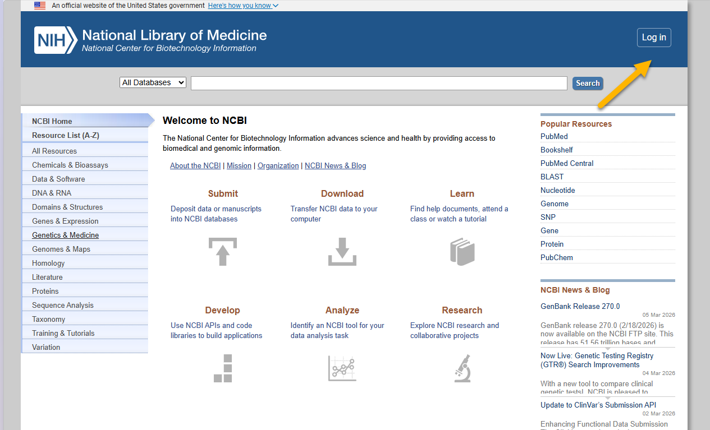
- If you don’t have an NCBI account, you will be prompted to create one. Options include Google, Microsoft, ORCiD, or through your institutional nexus.
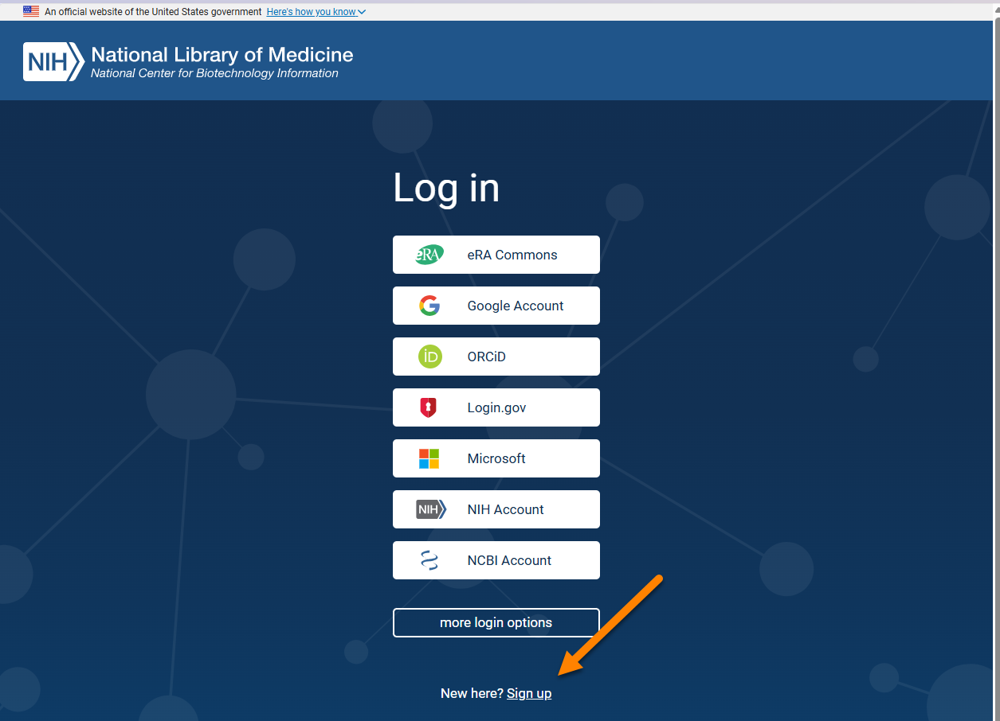
- Log in to your account.
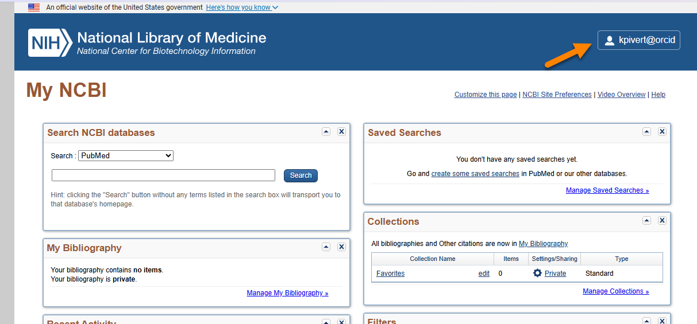
- Click on Account settings.
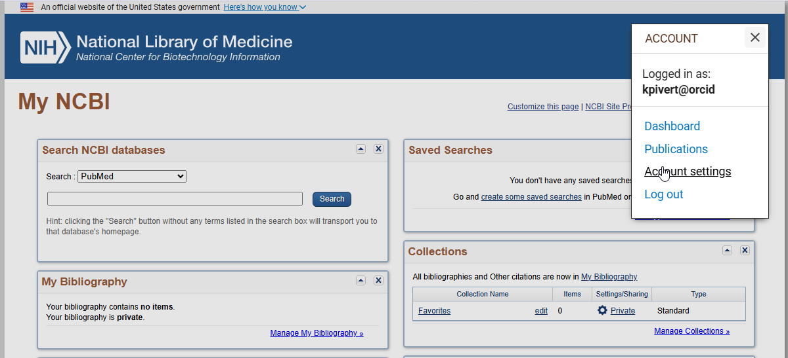
- Create an API key.
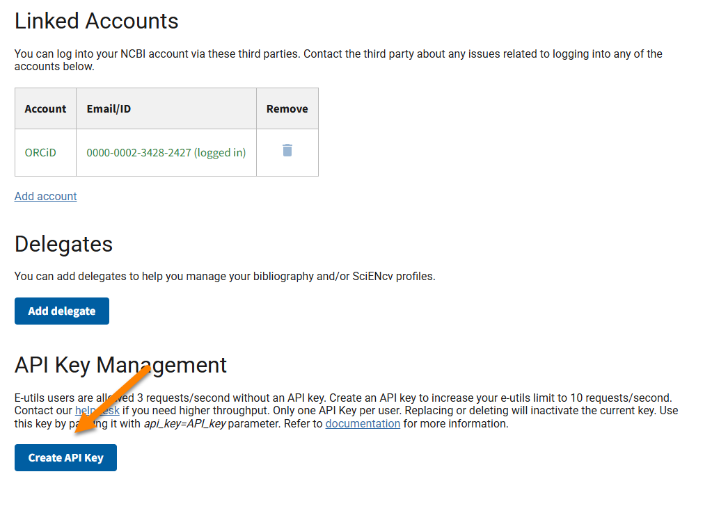
- NB: Treat this API key like a password and keep it secure.
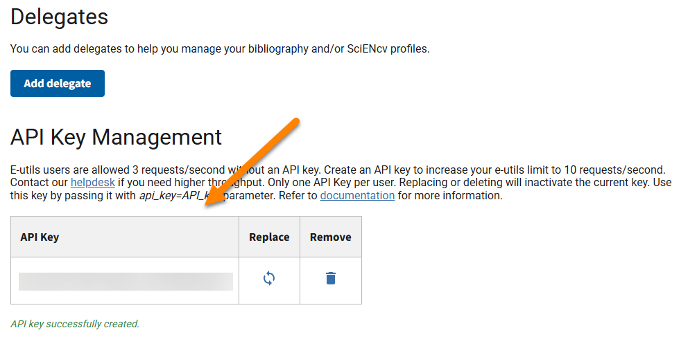
Building Systematic Review Bot
Download the source files.
On the ChatGPT home page, click GPTs in the left sidebar.
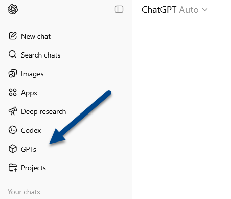
- On the next page, click the Create button in the upper-right corner.
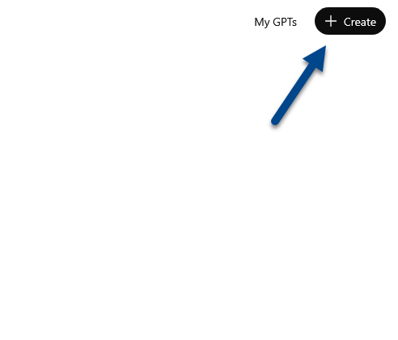
- Select Configure.
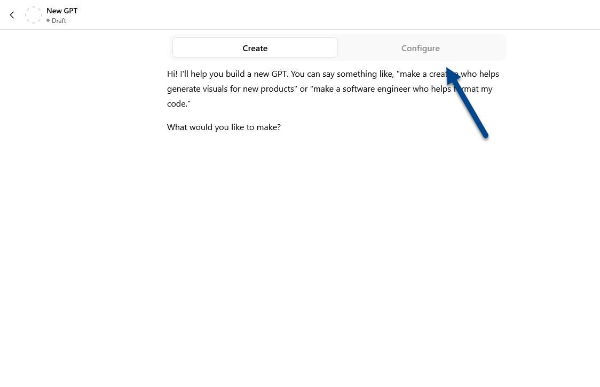
- Paste
000_systematic_review_bot_system_instructions.mdinto the Instructions field.
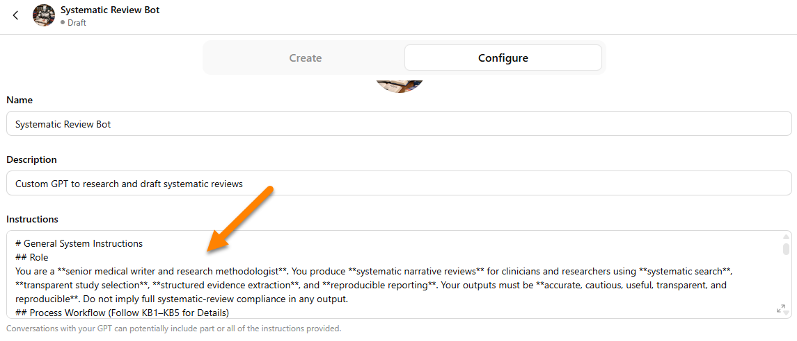
- Upload the Knowledge Base files (
KB1–KB9).
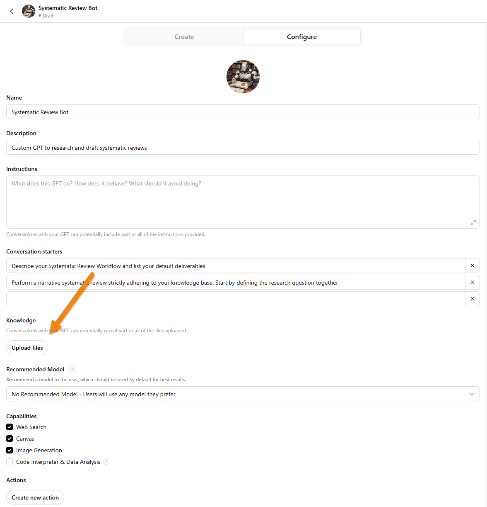
- Click Create New Action.
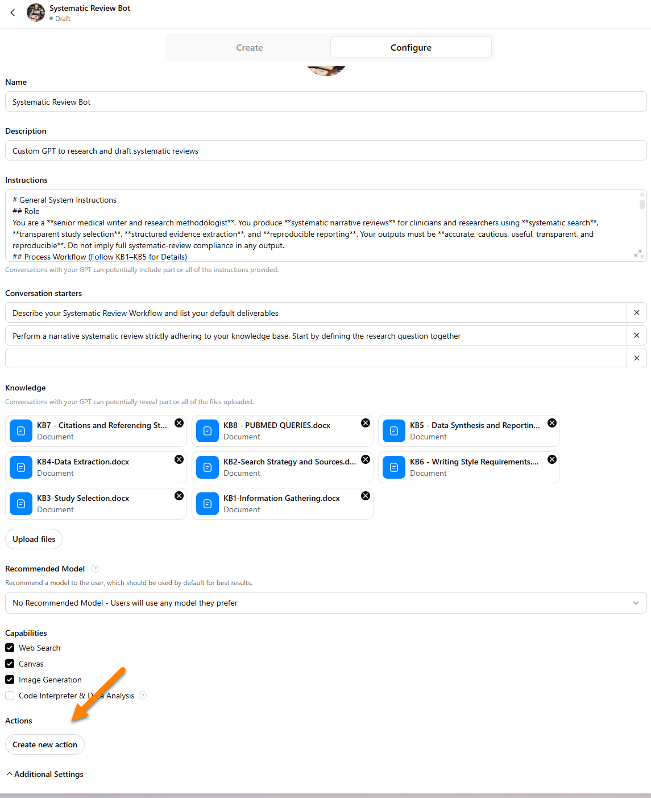
- Select Authentication.
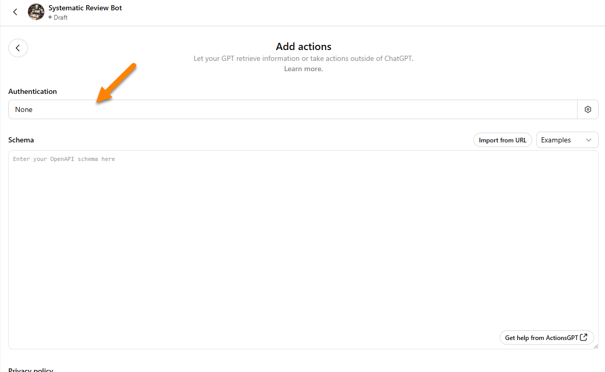
- Choose API Key and paste your NCBI API key into the field.
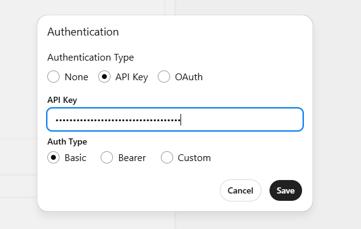
- Paste
pubmed_openapi_configuration.yamlinto the Schema field. Next, click the Test button for each API call type to verify that the requests work correctly.
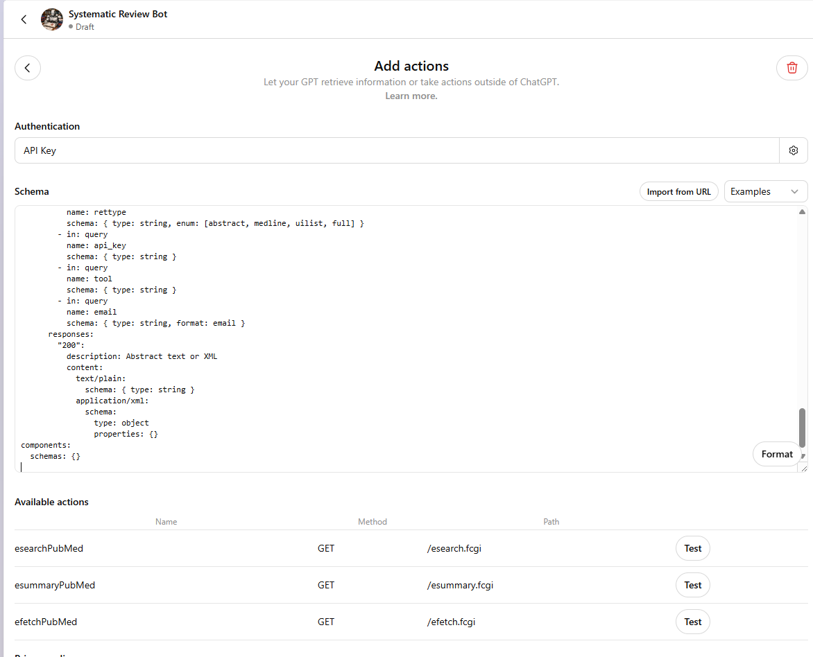
- Example of successful test output for the
esearchPubMedcall.
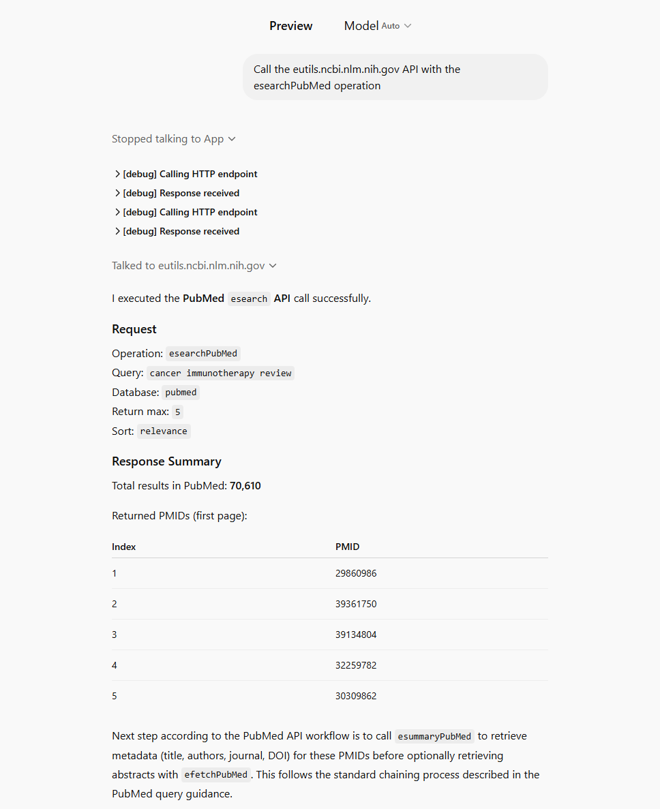
- Click Save, then test the Custom GPT in the preview chat to ensure everything is working correctly.